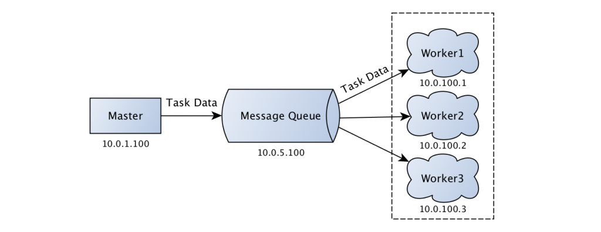

前述
本篇讲述Celery的原理和基本使用
基本原理
Celery基于Broker传递执行任务，当tasks调用被调用时，先序列化，然后传递到Broker，worker取出来执行。
下面是celery基本的架构。

Broker通常是RabbitMQ和Redis
序列化
Celery通过Python的pickle模块或json序列化。
通过下面的例子简单看看Celery如何序列化Python对象的。
有两个Python模块，task和app。
## task.py
from celery import Celery
app = Celery(
'demo',
broker='redis://:@127.0.0.1:6379/1',
backend='redis://:@127.0.0.1:6379/1')
@app.task
def add(x, y):
return x + y
# app.py
from task import add
if __name__ == '__main__':
print('start task')
result = add.delay(2, 18)
我们在终端执行python app.py，连接Redis我们可以看到多了一个celery key，它是Redis的list类型，后加入的放到最前面。查看某一项内容是这样的。
{\"body\": \"W1syLCAxOF0sIHt9LCB7ImNhbGxiYWNrcyI6IG51bGwsICJlcnJiYWNrcyI6IG51bGwsICJjaGFpbiI6IG51bGwsICJjaG9yZCI6IG51bGx9XQ==\", \"content-encoding\": \"utf-8\", \"content-type\": \"application/json\", \"headers\": {\"lang\": \"py\", \"task\": \"test.add\", \"id\": \"fd93e14c-984b-4931-87f6-8547eb8f91e7\", \"shadow\": null, \"eta\": null, \"expires\": null, \"group\": null, \"retries\": 0, \"timelimit\": [null, null], \"root_id\": \"fd93e14c-984b-4931-87f6-8547eb8f91e7\", \"parent_id\": null, \"argsrepr\": \"(2, 18)\", \"kwargsrepr\": \"{}\", \"origin\": \"gen11663@localhost\"}, \"properties\": {\"correlation_id\": \"fd93e14c-984b-4931-87f6-8547eb8f91e7\", \"reply_to\": \"b99f0911-fce8-3812-8c71-26f80016b102\", \"delivery_mode\": 2, \"delivery_info\": {\"exchange\": \"\", \"routing_key\": \"celery\"}, \"priority\": 0, \"body_encoding\": \"base64\", \"delivery_tag\": \"d48c84e6-68d5-4403-9aaa-c40849c1d515\"}}"
启动一个worker
celery work -A task -l info
可以看到结果被执行，查看Redis会看到有一个celery-task-meta-taskid的key，它是一个string，里面存放了task执行的结果和状态。
更多Celery的工作流程，查看celery消息的编码和序列化和Python之Celery使用详解
命令
实现机制